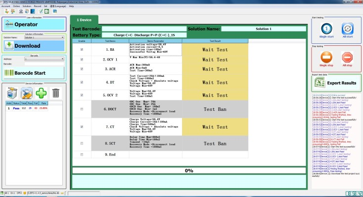
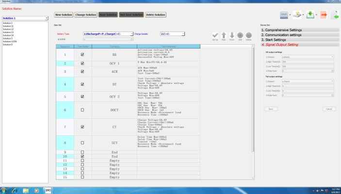
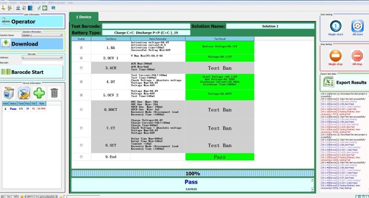
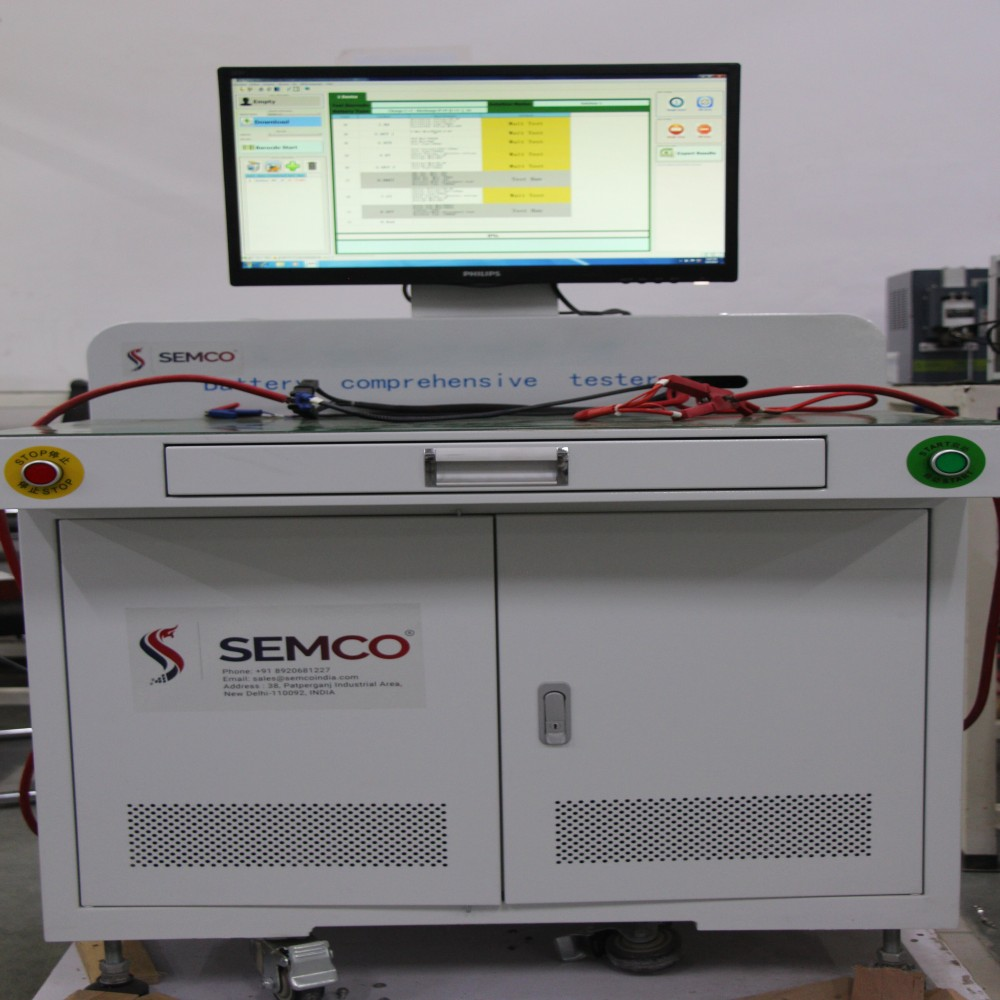

Introduction
A battery comprehensive tester is an advanced device designed to evaluate and analyze the performance of batteries across various parameters. It serves as a powerful tool for both manufacturers and users to assess the health, capacity, and overall functionality of different types of batteries. By subjecting batteries to a range of tests, such as voltage measurement, capacity testing, internal resistance analysis, and discharge curve analysis, a comprehensive tester can provide valuable insights into the battery's condition and performance capabilities. This information helps identify weak or faulty batteries, optimize charging and discharging processes, and ultimately improve the overall efficiency and lifespan of battery systems. With its ability to diagnose and troubleshoot battery issues accurately, a battery comprehensive tester plays a crucial role in ensuring reliable and sustainable power supply across industries and applications.
How a battery comprehensive tester works
Battery technology has become an integral part of our modern lives, powering a wide range of devices and systems. To ensure optimal performance and longevity, it is essential to have a thorough understanding of a battery's capabilities and condition. This is where a battery comprehensive tester comes into play.
A battery comprehensive tester is a sophisticated device that employs various testing techniques to evaluate and analyze the performance of batteries. Let's delve into how this remarkable tool works:
Voltage Measurement: One of the fundamental tests conducted by a comprehensive tester is voltage measurement. It measures the battery's voltage output, which indicates its state of charge. By comparing the measured voltage against the battery's expected voltage, the tester can determine the battery's capacity and estimate its remaining runtime.
Capacity Testing: Comprehensive testers also perform capacity testing, which involves discharging the battery under controlled conditions. By measuring the energy output during this process, the tester determines the battery's actual capacity, allowing for accurate assessment of its health and performance.
Internal Resistance Analysis: Internal resistance is a crucial parameter that affects a battery's efficiency and overall performance. A comprehensive tester measures the internal resistance of a battery by applying a load and analyzing the voltage drop. This measurement helps identify any resistance-related issues, such as high resistance due to aging or degradation, which can lead to reduced performance and shorter battery life.
Discharge Curve Analysis: The discharge curve represents how a battery's voltage changes over time during discharge. A comprehensive tester plots this curve and analyzes its shape and characteristics. By examining the discharge curve, the tester can identify irregularities, such as voltage drops or fluctuations, which might indicate battery deterioration or other performance issues.
Data Analysis and Reporting: A battery comprehensive tester collects and analyzes the data obtained from various tests. It then generates detailed reports, providing insights into the battery's overall condition, capacity, internal resistance, and performance trends. These reports assist in making informed decisions about battery maintenance, replacement, or optimization.
It is important to note that different comprehensive testers may offer additional features and tests specific to certain battery chemistries or applications. For example, testers designed for lithium-ion batteries may include tests for state of health (SOH) and state of charge (SOC) estimation, as well as safety checks for temperature and voltage limits.
The parameters that effect the process

Several parameters play a crucial role in the functioning of a battery comprehensive tester. These parameters directly impact the accuracy and effectiveness of the testing process. Some of the key parameters include:
Voltage Range: The tester should have a suitable voltage range to accommodate the batteries being tested. It should be capable of measuring both low and high voltages accurately.
Current Range: The current range determines the maximum discharge or charge rate that the tester can handle. It should be adjustable to accommodate different battery types and sizes.
Testing Time: The duration of the testing process varies depending on the type of battery and the specific tests being performed. The tester should allow for sufficient testing time to ensure accurate results.

Testing Modes: A comprehensive tester typically offers multiple testing modes, such as capacity testing, internal resistance analysis, and voltage measurement. It is important to select the appropriate testing mode based on the specific requirements and objectives of the battery evaluation.
Data Analysis and Reporting: The tester should have robust data analysis capabilities to interpret the test results accurately. It should generate comprehensive reports that provide detailed insights into the battery's performance, health, and capacity.
Safety Features: Battery testing involves handling potentially hazardous energy sources. The tester should incorporate safety features such as overvoltage protection, short-circuit prevention, and temperature monitoring to ensure the safety of the user and the batteries being tested.
User Interface: A user-friendly interface is essential for easy operation of the tester. It should provide clear instructions, intuitive controls, and display relevant information in a comprehensible manner.

By considering these parameters, a battery comprehensive tester can optimize the testing process, deliver accurate results, and facilitate informed decision-making regarding battery management, maintenance, and performance optimization.
Basic principles

A battery comprehensive tester operates on the basic principle of evaluating and analyzing various parameters of a battery to assess its performance and condition. The key principle underlying its operation involves measuring the electrical characteristics of the battery and analyzing the data obtained.
The tester typically applies controlled loads or stimuli to the battery and measures the corresponding responses. These responses can include voltage, current, capacity, internal resistance, discharge curves, and other relevant parameters.
By subjecting the battery to different tests and measuring its electrical behavior, the tester can provide insights into the battery's health, capacity, efficiency, and overall performance.
The comprehensive tester works based on the fundamental understanding that a battery's electrical characteristics change with its state of charge, age, and usage patterns. By comparing the measured values with expected values or predefined standards, the tester can determine if the battery meets the desired criteria or if it exhibits any issues or abnormalities.
The tester often incorporates advanced algorithms and analysis techniques to process the collected data and generate comprehensive reports. These reports provide valuable information for battery management, decision-making, and optimizing the performance and lifespan of the battery.
Benefits of a battery comprehensive tester
A battery comprehensive tester offers numerous benefits in battery management and optimization. Firstly, it enables accurate and precise evaluation of a battery's performance, capacity, and health, ensuring timely maintenance or replacement. This helps prevent unexpected failures and maximizes the lifespan of batteries. Additionally, the tester aids in selecting the most suitable batteries for specific applications, optimizing performance and efficiency. It also facilitates proactive maintenance by detecting potential issues early on, reducing downtime and costs. By providing comprehensive data analysis and reporting, the tester empowers informed decision-making, enabling users to optimize battery usage and improve overall system reliability. Ultimately, the benefits of a battery comprehensive tester lie in its ability to enhance battery performance, extend lifespan, and ensure reliable power supply across various industries and applications.
Semco Battery Comprehensive tester

The Semco Battery Comprehensive tester offers a range of models, including the SI BCT 100/120V 120/200/300A, designed to meet diverse testing requirements. This advanced tester provides a host of major features that enhance its functionality and usability. With programmable control of test items, users can customize and define specific test parameters according to their needs, enabling precise and targeted testing. The tester also offers the capability to save test records to a database (SQL) or file (EXL), ensuring convenient data storage and easy access for future reference or analysis. The project export and import function allows users to transfer test configurations between different systems, streamlining workflow and ensuring consistency. Additionally, the Semco Battery Comprehensive tester incorporates an open-circuit voltage test, enabling accurate measurement of a battery's voltage when no load is applied. The AC internal resistance test helps identify any resistance-related issues within the battery, enabling early detection of potential performance limitations. Furthermore, the tester is equipped with short circuit protection, ensuring user safety and preventing damage to both the batteries and the testing equipment. Overall, the Semco Battery Comprehensive tester offers a comprehensive range of features and functionalities that enhance testing precision, data management, and user convenience.
How to use a Semco battery comprehensive tester
To use a battery comprehensive tester effectively, follow these simple steps. First, ensure that the tester is properly set up and connected to a power source if required. Next, connect the battery to be tested securely to the tester, making sure to match the positive and negative terminals correctly. Once the connections are secure, configure the tester to the desired testing parameters, such as voltage range, current range, and testing mode. Start the testing process, allowing the tester to perform the necessary measurements and analyses. Monitor the display or interface of the tester to observe the real-time readings and any generated reports or data. Once the testing is complete, safely disconnect the battery and properly store the tester. Analyze the test results to gain insights into the battery's performance, health, and capacity. Based on the findings, take appropriate actions such as maintenance, replacement, or optimization of battery usage. By following these steps, users can effectively utilize a battery comprehensive tester to assess and manage battery performance with accuracy and efficiency.
Got the solution to your battery worries then what are you waiting for book a live demo and operate your battery plant without any hassles and tensions. If you liked our newsletter then do not forget to share and comment and stay tuned for our next Newsletter on “R&D Solutions (IR Tester)”. Till then “Happy Batteries”.